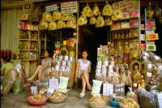
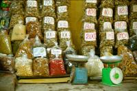
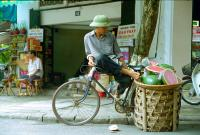
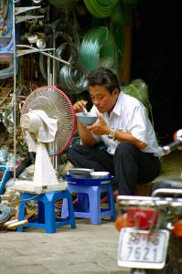
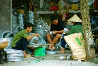
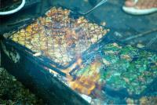

|
Mercredi 20 juin
On s’est pris la tête avec le gars du bus parce qu’on ne voulait payer que
le prix normal. C’est vraiment compliqué de savoir quoi faire, comment agir
pour le mieux quand on est dans un pays où la situation financière des gens
qu’on côtoie est tellement inférieure à la notre. Un agriculteur dans le Sud
du Vietnam, qui travaille 8 heures dans son champ, gagne 9FF par jour et donc
un smicard français est 25 fois plus riche en argent que ce brave paysan. Dans
le même temps, une soupe avec des nouilles et des légumes ne coûte que 1FF,
mais il va devoir s’endetter sur 20 ans pour acheter un scooter qui vaut 10000F!!!
Alors, lorsqu’on débarque dans un pays comme le Vietnam, l’Inde ou le Laos,
on ne sait plus très bien comment agir. Si on paie le prix normal, on se sent
un peu coupable, on a un peu l’impression d’abuser de la situation. Ce n’est
pas “normal” de payer 25F pour faire 400 kilomètres! Et puis, on se dit que
si on paie un supplément, si ça peut améliorer la vie du chauffeur de bus, du
contrôleur et du gamin dans la rue, pourquoi pas. D’autant que, avouons le,
nous, ça ne nous coûte vraiment pas grand chose, et que, lui, c’est sûr, cela
va lui améliorer son quotidien, et il a peut-être vraiment besoin de cette aide.
Mais d’un autre côté, donner de l’argent sans compter (pour le pays où 1FF ce
n’est pas rien) peut avoir de telles conséquences.
C’est que le tourisme n’a pas que des avantages pour un pays! On a lu un article
d’un professeur d’économie au Laos qui parlait de l’ouverture de son pays au
tourisme. Ce n’est pas simple. En gros, il y a les avantages évidents qui sont
liés aux entrées de devises étrangères. Mais d’un autre côté, il y a tous les
inconvénients.
- La prostitution. C’est horrible de voir à quel point elle est développée
ici. Y compris la prostitution répugnante des enfants.
- Le déséquilibre entre régions. Seules certaines parties du pays attirent
les touristes, celles qui ont des attractions. Et les différences peuvent
se creuser si le pouvoir en place n’y prend garde.
- La déstructuration. La population locale a tendance à se tourner vers des
métiers qui font rentrer des devises aux dépens de leurs métiers traditionnels,
beaucoup se retrouvent à vendre quelques objets, c’est presque de la mendicité,
en plus il s’agit bien souvent de boulots saisonniers; les jeunes en particulier
on tendance à imiter le mode de vie occidental aux dépens de leur propre façon
de vivre, délaissant ainsi toute leur richesse culturelle; le touriste créée
de nouveaux besoins (boîtes de nuit, fringues, ...) qui sont un peu décalés
par rapport à leur mode de vie. On ne prêche pas l’immobilisme, mais brûler
des étapes dans un pays aussi peu préparé…
- L’hospitalité: elle a tendance à être remplacée par la notion de service.
- En plus, d’après l’article, seulement 25% de l’argent drainé par le tourisme
profite au pays. Beaucoup va aux agences de voyages et aux compagnies aériennes
souvent étrangères. Et dans le pays, le haut niveau de vie des gens qui voyagent
les mène bien souvent vers le même type de structure, les grands hôtels et
restaurants aux normes internationales, et rarement vers les petits restaurants
de rue.
Bref, il y a des fois, on a envie de ne pas être là, de souhaiter qu’aucun
touriste n’ait mis les pieds ni le portefeuille à cet endroit. Et puis quelques
fois, on se dit que ça améliore la vie des gens. Un vrai casse-tête. Le problème
est que tout est amplifié par la différence de richesses et par le grand nombre
de visiteurs. Si on prend l’exemple des gamins qui demandent argent, bonbons
ou stylos. Le geste qui vient du cœur va te dicter de donner. Et on en parle
en connaissance de cause: on a filé des savons à des gamines, on a acheté des
bricoles à des mômes et on est même parti avec une cargaison de stylos à distribuer
(ils ont mal supporté le temps et les voyages, aucun ne fonctionnait…). Mais
on a décidé de ne plus donner d’argent à un gamin. Mendicité ou travail, on
aimerait tellement que cela ne soit pas là sa place. Et même si l’on est conscient
que ce n’est pas toujours facile pour sa famille, et même si on sait que penser
à l’éducation d’un enfant est le réflexe de quelqu’un qui ne vit pas dans l’urgence
de la précarité, on pense qu’un gamin qui rapporte de l’argent est un gamin
qui n’ira pas à l’école. Ce n’est peut-être pas toujours vrai, mais sûrement
très souvent. Et si une dizaine de touristes donne chacun 1FF à un gamin, il
rapportera plus que son père dans son champ! S’il nous dit qu’il a faim, on
lui offre un truc à manger.
On a décidé également de ne plus donner de cadeaux, de parfums, de stylos,
de savons. D’abord parce qu’il y a plein d’endroits où les gens vivent en équilibre.
Sans beaucoup d’argent, de “richesses”, mais en étant sans doute heureux. Vivre
simplement n’est pas forcément vivre mal. Beaucoup n’ont pas de télé, de voiture,
et même ont du mal à s’acheter du savon “de luxe”. Mais ils se lavent, ils ont
une culture, une vraie identité, une solidarité et un sens de la famille qui
a disparu chez nous. Et on n’a pas envie de contribuer à la destruction de cette
fragile société en donnant à un gamin ce que le chef du village aura peut-être
du mal à se payer.
Et puis certes, il y a les endroits où les gamins et les adultes ont besoin
d’aide, pour vivre, manger, pour aller à l’école ou effectivement s’acheter
du savon ou des stylos. Mais donner comme cela, de façon désordonnée, nous semble
peu efficace et même tellement pervers quelques fois. Lorsqu’on donne, gamin
ou adulte, on pense faire le bien, mais quelques fois... En Inde par exemple,
il y a de vrais réseaux tenus par la mafia qui rackettent les mômes. Ils récoltent
tout, stylos, bonbons et tout est revendu! On y loue aussi des bébés qu’on colle
dans les bras de jeunes filles pour apitoyer les gens et récolter davantage.
En donnant, on fait vivre la mafia! Pas facile de s’y retrouver. Au Laos, on
“exporte” des mendiants en Thaïlande qui sont logés et nourris en échange d’un
pourcentage de leur “recette”. Au Népal, au Vietnam, des mômes enfermés dans
leur logique de recevoir, qui nous tirent la langue, nous traitent de radin
(en anglais s’il vous plaît) si on refuse de donner. Souvent on entend “why?”.
Pourquoi on refuse de donner? C’est devenu tellement naturel pour eux de recevoir.
Ils sont alors en position de demandeurs, très souvent ils n’offrent rien en
échange, et se retrouvent en position d’infériorité.
Au Népal toujours, des gamins se régalent des bonbons offerts par les marcheurs
dans les montagnes. Mais certaines pistes de montagnes sont devenues de véritables
autoroutes, les friandises affluent, et les caries aussi!!! Mais ils n’ont pas
d’argent pour se soigner les dents. Véridique.
Dans les montagnes au Vietnam, les mamies restent toute la journée, le nez
collé à la porte des hôtels, et espèrent vendre un bracelet, un pull... ou de
l’opium. C’est tellement enrageant de les voir ainsi.
Alors que faire? On ne sait pas trop. Trouver un organisme humanitaire digne
de confiance, installé, enraciné dans le pays. Une association qui dépensera
intelligemment l’argent récolté. Et puis, faire vivre les gens, les petits commerces,
les épiceries, les petits restos, etc. Mais en payant les choses au juste prix,
ou un peu plus. Mais il ne faut pas que l’agriculteur abandonne son champ ou
sorte son gamin de l’école pour vendre des cartes postales, comme c’est le cas
dans déjà beaucoup d’endroits. Le mieux est encore quand la population réussit
à canaliser le flot des touristes comme sur l’île de Taquile au Pérou, ou dans
ce petit village de Madagascar, lorsque le village et ses représentants organisent
l’hébergement et la restauration chez l’habitant, lorsqu’ils gèrent et distribuent
l’argent. Dans ces endroits, on a l’impression que donner est utile. Tout comme
on trouve aussi utile de donner aux vrais mendiants, ceux qui demandent aussi
une pièce aux gens du coin et pas seulement aux touristes, et qui se contentent
d’une aumône en rapport avec le niveau de vie de ces concitoyens...
Aujourd’hui, on est bien crevé, donc, on a dormi, mangé de la soupe, tenté
une sortie, resté coincé par la pluie sous le porche de la poste, rentré en
courant, une bonne sousoupe et au lit!
Suite du voyage : Sapa
|
Vietnam
Hanoi
|

Vietnam
Hanoi
|

Vietnam
Hanoi
|

Vietnam
Hanoi
|

Vietnam
Hanoi
|

Vietnam
Hanoi
|

Vietnam
Hanoi
|

Vietnam
Hanoi
|
|
|